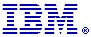
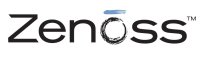

Conference Info Menu
Sponsor Us
If your company is interested in sponsoring The Sixth Annual Southern
California Linux Expo, please
contact us via telephone or e-mail.
For pricing information please contact us:
Ilan Rabinovitch
sponsorship@socallinuxexpo.org
818-442-1865 Voice
Platinum Sponsors
Silicon Mechanics
Silicon Mechanics is a leading manufacturer of rackmount servers and storage solutions with one of the most comprehensive product offerings available. We work collaboratively with customers deploying large, rack-optimized server installations, and take into consideration density, power, thermal efficiency, performance, and reliability to create best fit solutions for each customer. Visit our booth or www.siliconmechanics.com to learn how to custom-configure a system for any computing environment.
Gold Sponsors
GroundWork OpenSource
GroundWork Open Source, Inc. (http://www.groundworkopensource.com) is the fastest growing provider of open source network and systems management software, delivering enterprise-class IT management solutions that offer unprecedented network, system and application availability at a fraction of the cost of proprietary solutions. An integral part of GroundWork’s “Just Right IT management” philosophy is to ensure that its software and services seamlessly integrate with a customer’s management solutions – thus preserving their existing investment while simultaneously providing value. GroundWork’s solutions are in use at organizations like AOL, SAIC, Seton Hall University, Siemens, and World Bank. GroundWork’s solutions are available from GroundWork, its partners including Red Hat, Unisys, Fujitsu, and a worldwide network of channel partners.
IBM
IBM and Linux can help your business expand with cost-effective hardware choices, from x86 servers to 64-bit computing, mainframes and supercomputers. There are now more than 15,000 IBM Linux customer engagements worldwide, allowing customers to reduce their computing costs with solutions ranging from webserving, ERP, consolidation and virtualization, to the world's largest supercomputers. IBM has the largest and most complete portfolio of Linux hardware, middleware and services solutions. In addition, more than 600 developers in the Linux Technology Center have been working as peers directly and successfully in various open source communities since 1999. They are proud of their many contributions that have helped accelerate Linux acceptance worldwide.
Visit us at our booth at SCALE to hear how you can advantage your datacenter with IBM's Linux solutions.
Novell
Novell is a world leader in enterprise infrastructure software. We are the only company that delivers an open source platform with integrated systems management, security, identity, and access management solutions. We also offer professional services to support our customers from the desktop to the data center. With these technologies and services, customers can easily manage both our platform and the other heterogeneous components of their IT infrastructures.
Customers can deploy Novell technologies directly-or through our global network of partners-and be free to focus on the innovation and high-quality service that drive their businesses forward. Novell-This Is Your Open EnterpriseT.
Silver Sponsors
Google
Google's innovative search technologies connect millions of people around the world with information every day. Founded in 1998 by Stanford Ph.D. students Larry Page and Sergey Brin, Google today is a top web property in all major global markets. Google's targeted advertising program provides businesses of all sizes with measurable results, while enhancing the overall web experience for users. Google is headquartered in Silicon Valley with offices throughout the Americas, Europe, and Asia.
Hewlett Packard
HP open source and Linux solutions are designed to solve your mission-critical IT problems today! We sell over a million Linux servers a year, delivering high performance clustering, strong security, storage, governance, and our commitment to the open source community. Learn more about our market leading Linux platforms—including HP ProLiant and Integrity Servers, and the unsurpassed HP BladeSystem c-Class at hp.com/linux. Moreover, HP Open Source Middleware Stacks offer three ways to adopt open source technology on HP platforms, including Building Blocks of supported software components, do-it-yourself Blueprints, and Consulting Services. Our solutions are delivered and supported by HP and authorized resellers with full multi-platform integration, single-source accountability, and support. In fact, we have over 6.500 open source and Linux professionals across 160 countries to spare you the frustration of relying with multiple vendors. Visit us at our booth at SCALE to hear how HP and the open source community work together.
KySoH
KySoH has a passion for high tech electronics and fun. They brought Tux Droid alive. Tux Droid is the first generation 2.4 GHz wireless robot specially built for Linux, and offers a completely novel and entertaining way to challenge your programming skills. Following the open source philosophy we intend to keep an open architecture allowing programmers to freely tune and tweak our product to their liking. KySoH offers high quality, funny and unusual products integrating new technologies and dedicated to entertainment. For more information, visit www.tuxisalive.com.
Plain Black
 Plain Black Corporation is the developer of WebGUI, an open source content management system. WebGUI is designed to support large enterprise environments, but is built with the average business user in mind. It's easy to use, can be easily customized, and is able to support websites of all sizes. Since 2001, WebGUI has been adopted by several Global 1000 companies, government agencies, universities, and non-profit organizations around the world. Plain Black provides professional services related to WebGUI, including training, development, hosting and design, and hosts an annual WebGUI Users Conference which brings together WebGUI users and experts from across the globe.
Plain Black Corporation is the developer of WebGUI, an open source content management system. WebGUI is designed to support large enterprise environments, but is built with the average business user in mind. It's easy to use, can be easily customized, and is able to support websites of all sizes. Since 2001, WebGUI has been adopted by several Global 1000 companies, government agencies, universities, and non-profit organizations around the world. Plain Black provides professional services related to WebGUI, including training, development, hosting and design, and hosts an annual WebGUI Users Conference which brings together WebGUI users and experts from across the globe.
To learn more about WebGUI, visit the open source project's community website at www.webgui.org, or visit Plain Black's website at www.plainblack.com for information on WebGUI related services.
Red Hat
 Red Hat, the world's leading open source solutions provider, is headquartered in Raleigh, NC with satellite offices spanning the globe. CIOs rank Red Hat the most valuable software vendor 3 years running in the /CIO Insight Magazine/ Vendor Value study. Red Hat is leading Linux and open source solutions into the mainstream by making high-quality, low-cost technology accessible. Red Hat provides an operating system platform, Red Hat Enterprise Linux, along with applications, management, and middleware solutions, including JBoss Enterprise Middleware Suite. Red Hat is accelerating the shift to service-oriented architectures and enabling the next generation of web-enabled applications running on a low-cost, secure open source platform. Red Hat also offers support, training and consulting services to its customers worldwide and through top-tier partnerships. Red Hat's open source strategy offers customers a long term plan for building infrastructures that are based on and leverage open source technologies with a focus on security and ease of management.
Red Hat, the world's leading open source solutions provider, is headquartered in Raleigh, NC with satellite offices spanning the globe. CIOs rank Red Hat the most valuable software vendor 3 years running in the /CIO Insight Magazine/ Vendor Value study. Red Hat is leading Linux and open source solutions into the mainstream by making high-quality, low-cost technology accessible. Red Hat provides an operating system platform, Red Hat Enterprise Linux, along with applications, management, and middleware solutions, including JBoss Enterprise Middleware Suite. Red Hat is accelerating the shift to service-oriented architectures and enabling the next generation of web-enabled applications running on a low-cost, secure open source platform. Red Hat also offers support, training and consulting services to its customers worldwide and through top-tier partnerships. Red Hat's open source strategy offers customers a long term plan for building infrastructures that are based on and leverage open source technologies with a focus on security and ease of management.
Talend
Talend is the first provider of open source data integration software.
After three years of intense research and development investment, and with solid financial backing from leading investment firms, Talend revolutionized the world of data integration when it released the first version of Talend Open Studio in 2006. Talend's solutions are used primarily for integration between operational systems, as well as for ETL (Extract, Transform, Load) for Business Intelligence and Data Warehousing, and for migration. Unlike proprietary, closed solutions, which can only be afforded by the largest and wealthiest organizations, Talend makes data integration solutions available to organizations of all sizes, and for all integration needs
Wind River
Wind River General Purpose Platform, Linux Edition, is the premier commercial-grade development and deployment solution for a wide range of devices. In addition to a fully tested and validated distribution based on the latest Linux 2.6 kernel, General Purpose Platform includes integrated open-source networking, security, and real-time technologies, along with the open, Eclipse-based Wind River Workbench development suite. The platform is backed by 24/7 global technical support, customer education, and specialized professional services to help jump-start your next project-all from the leader in Device Software Optimization (DSO).
Registration and Speaker Track Sponsors
BakBone
More than 12,000 users worldwide leverage BakBone’s Integrated Data Protection (IDP) approach to simplify the management of multi-platform environments with a portfolio of backup, disaster recovery, replication and storage reporting solutions for Linux, Solaris, Windows and Mac OS X. These scalable data protection solutions address the demands of large enterprise organizations as well as small- to medium-sized businesses.
Registration Sponsors
Krugle
Krugle, the code search company, helps developers find, fix and learn about code.
The Krugle Enterprise appliance searches across code repositories and development resources, using contextual search to provide valuable insights to developers. Krugle allows developers to leverage existing code, do impact analysis and easily learn new code.
The Krugle DevNetwork Edition delivers code search services for developer networks including Amazon Web Services, CollabNet, IBM developerWorks, SourceForge, and Yahoo! Developer Network. In addition, Krugle hosts a free service called KruglePublic, leveraging over 2.5 billion lines of open source code.
One Course Source
One Course Source offers a variety of IT training services worldwide and specializes in open source courseware. One Course Source offers private and public training classes and courseware for topics including Linux, Perl, Tcl/TK/Expect, Network+, C++, and Python. Public classes are held in San Diego, CA while corporate training is held worldwide and can be customized to meet the needs of each client. One Course Source courseware can be used in conjunction with OCS training or with the client's training. It is the company’s mission to make OCS courseware the ‘manuals of choice’ for today’s training professional.
Trusted Computer Solutions
“SecurityBlanket,” from Trusted Computer Solutions (TCS) allows users to easily lock down a newly installed Linux operating system and periodically check the state of security on an existing system. SB is menu driven and supports both predefined profiles that conform to known system hardening industry standards as well as customized profiles. SB assesses the system for security vulnerabilities, provides detailed descriptions of each, and allows automatic correction or bypass. This tool greatly simplifies the system lock down process for system administrators, as well as provides a robust set of reports that help monitor system security over time.
Vyatta
Vyatta builds commercially supported, open-source networking solutions that provide an alternative to over-priced, inflexible products from proprietary vendors. Vyatta's Linux-based router, firewall and VPN software gives users a level of control unavailable from proprietary solutions. Vyatta customers are thought leaders who recognize the benefits of flexible deployment options-x86 hardware, blade servers, virtualization-of freedom to integrate applications of their choice, and of the economic and performance advantages of commodity hardware and components. For more info, visit http://www.vyatta.com. Get to know us at http://www.vyatta.com/secret/
Zenoss
Zenoss Inc., based in Annapolis, MD, offers an award-winning, complete open source
network monitoring and systems management platform that discovers networked IT resources, monitors them for performance and availability, and tracks changes through a configuration management database (CMDB). Zenoss offers enterprise-grade support, services, and commercial add-ons through its Enterprise Subscription. Make IT easy. The GPL Zenoss Core can be downloaded from www.zenoss.com/download.
ISP Sponsors
Digilink
Since 1994, DigiLink has stood alone as Southern California's premier Internet Service Provider. Founded by a networking engineer who couldn't find a reliable ISP for his clients, DigiLink's obsession with sound engineering and precision crafted networks has led to a reputation as the place to go for businesses looking for solid business internetworking solutions.
Digilink provides internet service nation wide, while connecting corporations all over the world through Voice over IP Service. Digilink is based in Marina del Rey, California. We serve businesses in the greater Los Angeles region and throughout United States.
DigiLink's services include: High-bandwidth/low-latency network connectivity, including Internet connectivity and Wide Area Networks (Fiber, T3, T1, and, DSL); Synchronous Wireless; Business-grade Voice over IP services; Server hosting and server co-location, including web hosting and e-mail hosting (with anti-virus/anti-spam service); and, Consulting, integration, and custom solutions.
Digilink has provided quality service for over 12 years with a demonstrated rock solid up time of 99.98%. We give the highest level of service at the lowest price.
For information about DigiLink services, including rates, call: 877-801-8533. On the web: http://www.digilink.net
Raffle Sponsors
LFS Technology
LFS Technologies is a developer of hardware and software for Linux based simulation systems that offer real-time execution and performance. LFS provides products and services that are adaptable to many commercial applications and affordable for the dedicated hobbyist. LFS Technologies will be featuring FlightGear and a 747 Cockpit Project at the Scale6x conference. LFS Technologies offers a variety of licensing options. A basic license provides a display set and Linux on a USB memory stick and does not require installation to your hard drive. For operating cockpit hardware a license that includes hardware and drivers can be purchased. A full-featured license provides a development environment, tools, and libraries. It includes selected source code and coding examples that allow the developer to build customized displays using OpenGl libraries.
Pragmatic Bookshelf
The Pragmatic Bookshelf features books written by developers for developers. The titles continue the well-known Pragmatic Programmer style, and continue to garner awards and rave reviews. As development gets more and more difficult, the Pragmatic Programmers will be there with more titles and products to help programmers stay on top of their game.
Media Sponsors
ActUSA
Since 1993, ACT USA has assisted businesses that wish to convert some or all of their core data and communication infrastructure over to Open Source platforms. They specialize in installation and maintenance of open source solutions for network transport, security, communications, and core services. ACT USA provides installation and support for Open Source projects such as Linux for network routing and security, Asterisk for communication and telephony services, and Apache2, MySQL, and other well known and established projects.
Apachecon 2007
The official conference of the Apache Software Foundation, ApacheCon draws ASF Members, innovators, developers, vendors, and users to experience the future of Open Source development. Meet, mingle, and exchange ideas with like-minded participants on groundbreaking technologies and emerging industry trends, through informal networking, peer discussions, birds-of-a-feather sessions, and entertaining social events.
Data Center Journal
The Data Center Journal was formed in 2003 and proudly serves as the only portal to the data center industry. The Data Center Journal provides information and services for the three groups that help make a data center successful; Information Technology, Facilities and Design.
The Data Center Journal articles are delivered to our readers every week through our online print and printed three times yearly for our readers worldwide. In addition, we offer continuing education programs on data center issues.
Free Software Magazine / FSDaily
 Free Software Magazine (http://www.freesoftwaremagazine.com) is a new magazine entirely dedicated to free software. It contains quality articles relating to both technical and non-technical issues. FSM's authors keep regular, well-regarded blogs about the free software world. All published material is released under a free license after publication. Visit Free Software Magazine now! http://www.freesoftwaremagazine.com
Free Software Magazine (http://www.freesoftwaremagazine.com) is a new magazine entirely dedicated to free software. It contains quality articles relating to both technical and non-technical issues. FSM's authors keep regular, well-regarded blogs about the free software world. All published material is released under a free license after publication. Visit Free Software Magazine now! http://www.freesoftwaremagazine.com
And if you want to keep up to date with all the free software news, visit Free Software Magazine's new news hub, FSDaily! http://www.fsdaily.com
IEEE - Computer & Security
The IEEE Computer Society strives to be the leading provider of technical information and services to the world’s computing professionals. The IEEE Computer Society offers its nearly 100,000 members a comprehensive program of publications, meetings, and technical and educational activities, fostering an active exchange of information, ideas, and innovation. No other professional or commercial organization comes close to matching the Computer Society in terms of the quality, quantity, or diversity of its publications. Headquartered in Washington, DC, the society serves its members from offices in Los Alamitos, CA, and Tokyo. The society is the largest technical society within the Institute of Electrical and Electronics Engineers (IEEE). See us at http://www.computer.org
ITToolbox.com
ITtoolbox is an online community of professionals who share practical information on IT topics. This community enables anyone to access the collective knowledge of a worldwide audience of experienced professionals. In doing so, ITtoolbox satisfies the need for practical and timely information for an infinite number of possible challenges in the complex and rapidly changing field of information technology.
Linux Journal
Linux Journal is the premier Linux magazine, dedicated to serving the Linux community and promoting the use of Linux world-wide. A monthly periodical, Linux Journal was founded in 1994 and is currently celebrating its thirteenth year of publication. To learn more about Linux Journal visit us at www.LinuxJournal.com
Linux Pro Magazine
In Linux Pro Magazine, you'll find the tools, tutorials, reviews, and concrete technical discussions you'll need to unlock the secrets of Linux - and not just from the server side. Linux Pro delivers solutions for real users with Linux on real desktops.
LinuxQuestions.org
LinuxQuestions.org is a free, friendly and active Linux Community with over 300,000 members and almost 3,000,000 posts. Founded in 2000 LQ offers forums, reviews, a Linux hardware compatibility list, a Linux knowledge base in wiki format, tutorials, a free Linux download site, a podcast, a Linux Radio show, a social bookmarking site, a Linux screenshots site , a job marketplace and more. LQ has forums for everything from Linux Newbies to Linux in the Enterprise and has 25 officially recognized Linux distribution forums.
LinuxSurf
Linuxsurf.com is a central place for the linux community to share.
LWN.net
LWN.net is the premier source for news from the Linux and free software worlds. Each week, LWN provides in-depth coverage of a variety of topics of interest to developers and users of free software. During the rest of the week, LWN has information about breaking news in the community, including a daily summary of Linux distribution security alerts. The weekly contains unparalleled Linux kernel coverage and software reviews by the Grumpy Editor, as well as stories on distribution news, security vulnerabilities, developement projects and more.
LXer
 LXer is a fully independent news and opinion site, established in January 2004, by Linux veteran Dave Whitinger, a well-known personality in the free and open source software community. LXer is one of the fastest growing Linux news and opinion sites on the globe. People turn to LXer for its readable, often updated news feed and comments. Over 400,000 unique users from 165 countries visit LXer each month, and LXer is syndicated by Google. CIOs, CTOs, government officials, as well as programmers, system administrators and end users make up our very active community.
LXer is a fully independent news and opinion site, established in January 2004, by Linux veteran Dave Whitinger, a well-known personality in the free and open source software community. LXer is one of the fastest growing Linux news and opinion sites on the globe. People turn to LXer for its readable, often updated news feed and comments. Over 400,000 unique users from 165 countries visit LXer each month, and LXer is syndicated by Google. CIOs, CTOs, government officials, as well as programmers, system administrators and end users make up our very active community.
Ontario LinuxFest
First and foremost the Ontario Linux Fest is a conference designed topresent compelling topics of interest to users of Linux and OpenSource software. These topics span a range of interests from technicalto motivational, educational to organizational and social to legal.Attendees will find out what is happening in the Open Source worldfrom the people directly involved.Linux Fest is also a social event. With a welcome party and afterparty there will be lots of time to network and socialize withlike-minded enthusiasts. It's a great event to catch up with oldfriends, meet project contributors and develop new businessrelationships.
Phoronix
Phoronix is the leading source for GNU/Linux and Solaris hardware reviews and has been serving the alternative OS community since 2004. Phoronix also provides hardware news, discussion forums, editorials, and more. The site provides reviews on notebook, desktop, and server hardware under Linux looking at compatibility with a number of different distributions along with in-depth performance analysis.
The Register
The Register is among the world's leading IT and tech websites - essential reading for more than five million monthly visitors attracted to its unique blend of solid news and off-beat reporting. Whether you're looking for the latest insights into virtualization, opinion on Apple's iPhone or a service call from the legendary Bastard Operator from Hell, The Register is your one-stop IT news destination at www.theregister.com
Usenix
USENIX is the Advanced Computing Systems Association. For over 30 years, it has been the leading community for engineers, system administrators, scientists, and technicians working on the cutting edge of the computing world. USENIX conferences are the essential meeting ground for the presentation and discussion of technical advances in all aspects of computing systems. Join us November 9-14, 2008 in San Diego, CA, for the 22nd Large Installation System Administration Conference. For more information about the USENIX Association and our upcoming events, see http://www.usenix.org/.
Varien
Varien is a web development firm devoted to creating engaging web sites, rich internet applications, and innovative user interfaces.